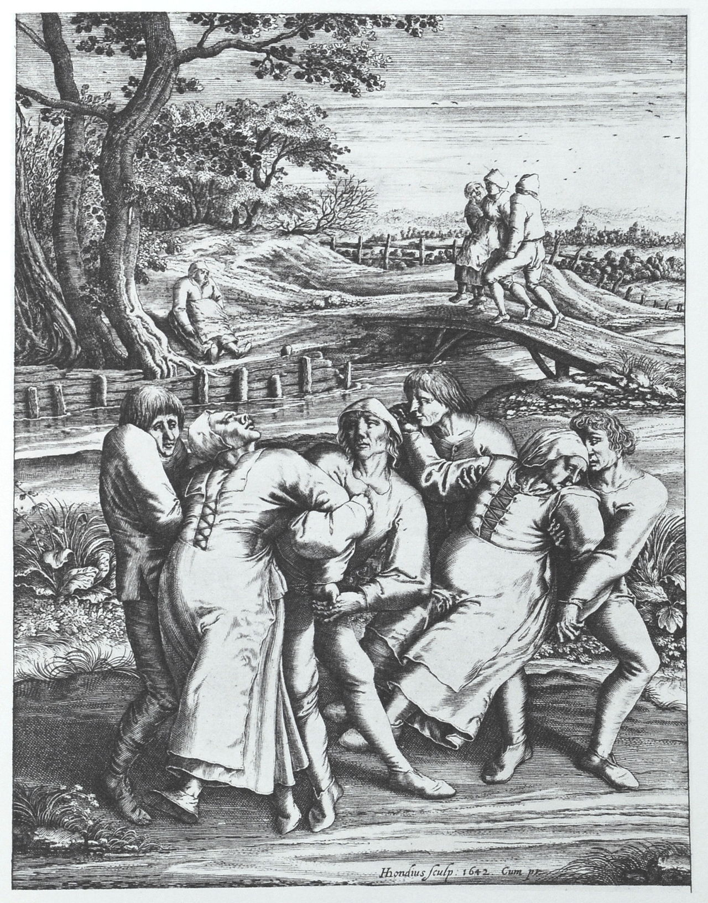

The outbreak began in July 1518 when a woman began to dance fervently in a street in Strasbourg.[1] By early September, the outbreak began to subside.[2]
Historical documents, including "physician notes, cathedral sermons, local and regional chronicles, and even notes issued by the Strasbourg city council" are clear that the victims danced;[1] it is not known why. Historical sources agree that there was an outbreak of dancing after a single woman started dancing,[3] a group of mostly young women joined in, and the dancing did not seem to die down. It lasted for such a long time that it attracted the attention of the Strasbourg magistrate and bishop, and some number of doctors ultimately intervened, putting the afflicted in a hospital.[citation needed]
Events similar to this are said to have occurred throughout the medieval age including 11th century in Kölbigk Saxony, where it was believed to be the cause of demonic possession or divine judgment.[4] In 15th century Apulia Italy,[5] a woman was bitten by a tarantula, the venom making her dance convulsively. The only way to cure the bite was to "shimmy" and to have the right sort of music available, which was an accepted remedy by scholars like Athanasius Kircher.[6]
Some believe[2] the dancing could have been brought on by food poisoning caused by the toxic and psychoactive chemical products of ergot fungi (ergotism), which grows commonly on grains (such as rye) used for baking bread. Ergotamine is the main psychoactive product of ergot fungi; it is structurally related to the drug lysergic acid diethylamide (LSD-25) and is the substance from which LSD-25 was originally synthesized. The same fungus has also been implicated in other major historical anomalies, including the Salem witch trials.[10][11]
In The Lancet, John Waller argues that "this theory does not seem tenable, since it is unlikely that those poisoned by ergot could have danced for days at a time. Nor would so many people have reacted to its psychotropic chemicals in the same way. The ergotism theory also fails to explain why virtually every outbreak occurred somewhere along the Rhine and Moselle rivers, areas linked by water but with quite different climates and crops".[7]
This could have been a florid example of psychogenic movement disorder happening in mass hysteria or mass psychogenic illness, which involves many individuals suddenly exhibiting the same bizarre behavior. The behavior spreads rapidly and broadly in an epidemic pattern.[12] This kind of comportment could have been caused by elevated levels of psychological stress, caused by the ruthless years (even by the rough standards of the early modern period) the people of Alsace were suffering.[7]
Waller speculates that the dancing was "stress-induced psychosis" on a mass level, since the region where the people danced was riddled with starvation and disease, and the inhabitants tended to be superstitious. Seven other cases of dancing plague were reported in the same region during the medieval era.[13]
This psychogenic illness could have created a chorea (from the Greek khoreia meaning "to dance"), a situation comprising random and intricate unintentional movements that flit from body part to body part. Diverse choreas (St. Vitus' dance, St. John's dance, and tarantism) were labeled in the Middle Ages referring to the independent epidemics of "dancing mania" that happened in central Europe, particularly at the time of the plague.[14][15][16]